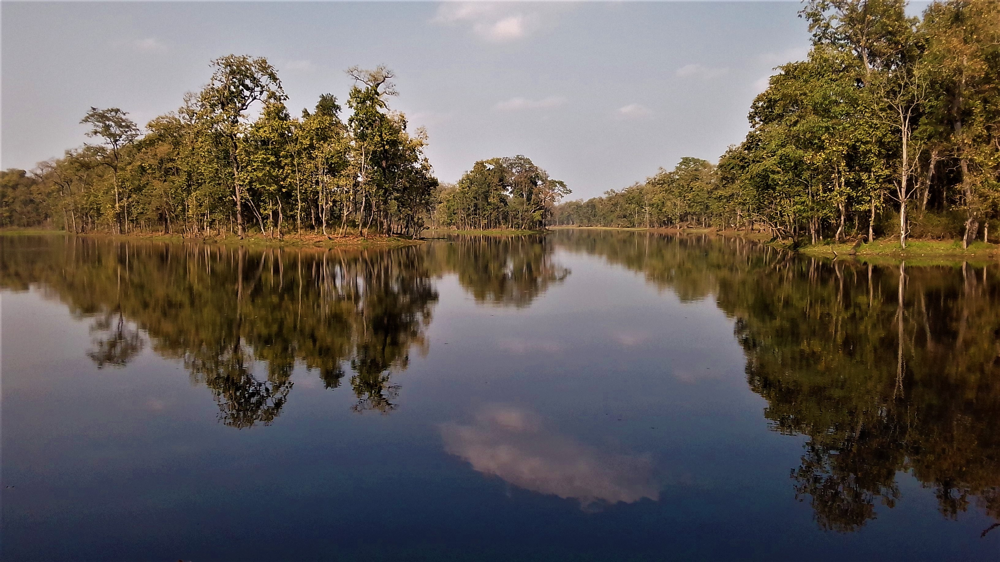
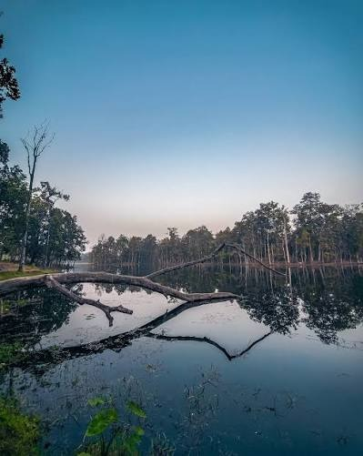
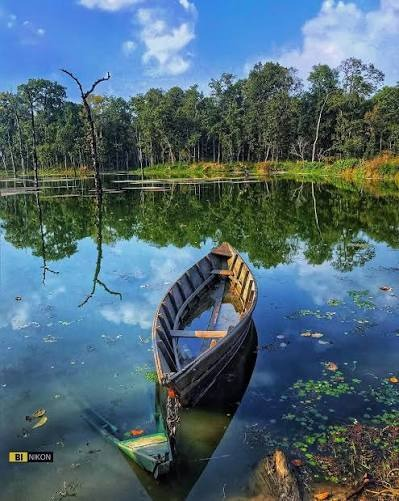
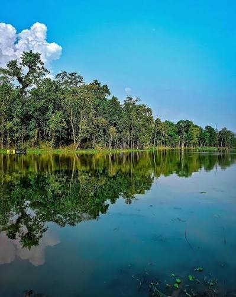
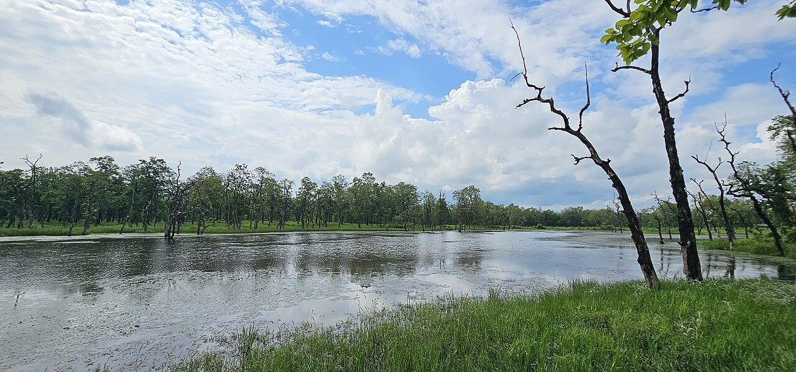
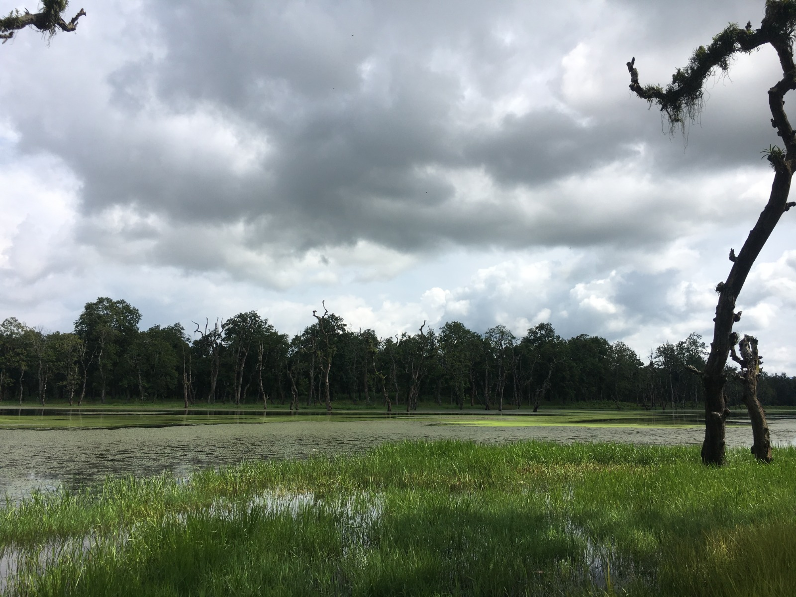
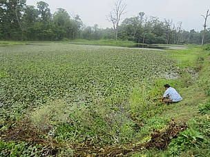
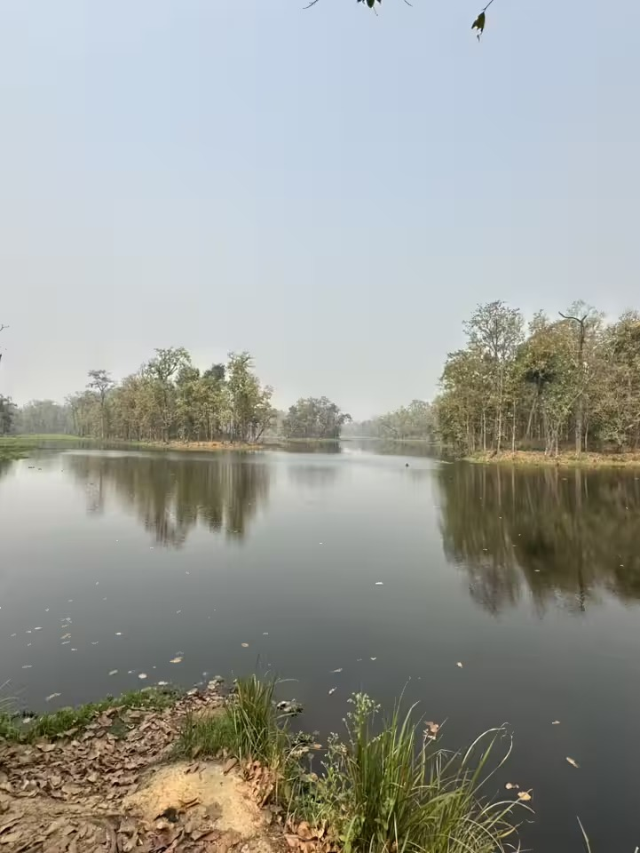

Explore the peaceful lakes, wetlands and natural landscapes around Bharatpur.
Beeshazari Tal is one of the most famous wetland destinations around Bharatpur, surrounded by forests, grasslands and rich biodiversity. The area is known for its peaceful lake environment, bird watching and opportunities to experience the natural landscape of Chitwan.


Rhino Tal is a quiet wetland destination where visitors can enjoy the natural beauty of Chitwan. Surrounded by greenery and wildlife habitat, the lake area offers a peaceful setting for nature lovers and photographers.


Batuli Pokhari is a beautiful wetland area surrounded by the natural landscape of Chitwan. Its calm environment and greenery make it a pleasant destination for visitors interested in exploring the quieter side of Bharatpur.


Tikauli is surrounded by forests and natural landscapes and forms part of the wetland and biodiversity areas around Bharatpur. It is a peaceful place to experience the greenery and wildlife environment of Chitwan.

Laxmi Tal is a local wetland destination offering visitors a quieter natural experience away from the busy parts of the city. The surrounding greenery and water landscape make it suitable for enjoying nature and taking photographs.

Mayur Tal is another wetland destination around Bharatpur where visitors can enjoy a calm natural environment. The lake and its surrounding landscape provide opportunities for nature observation and photography.
28,000 Tal is part of the network of wetlands and natural areas around Bharatpur. The surrounding landscape offers a peaceful environment for visitors who want to explore the lakes, greenery and biodiversity of Chitwan.